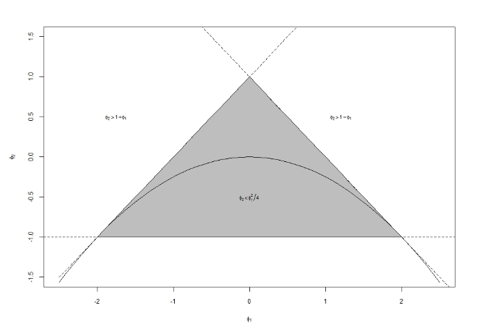

沖本本 第二章
2. 問題(p.54)
どうも、令和初のGWで生活リズムが夜型にシフトしてしまっているHRYです。 前回の続きで、第2章の章末問題をやっていこうと思います。
2.1. AR(2)過程(2.18)の定常条件が(2.19)で与えられることを確認せよ。
まず、(2.18)のAR(2) モデルが、 \[ y_{t}=c+\phi_{1} y_{t-1}+\phi_{2} y_{t-2}+\epsilon_{t}, \epsilon_{t} \sim W . N .\left(\sigma^{2}\right) \] がこちらで、その定常条件が以下に示す(2.19)の3つの条件であることを確認します。 \[ \begin{array}{l}{\text { 1. } \phi_{2}<1+\phi_{1}} \\ {\text { 2. } \phi_{2}<1-\phi_{1}} \\ {\text { 3. } \phi_{2}>-1}\end{array} \] まず対象とするAR(2) 過程の特性方程式は(2.15)の一般式から、 \[ 1-\phi_{1} z-\phi_{2} z^{2}=0 \] となります。問題を解きやすくするため、\(z^{-1}=\lambda\)とおくと、 \[ \lambda^{2}-\phi_{1} \lambda-\phi_{2}=0 \] と式を変形できます。
特性方程式の解\(z\)のすべての絶対値が1より大きくなるとき、その過程は定常となるので、上記の2次方程式の解\(\lambda\)が、 \[ |z|>1 \Leftrightarrow|\lambda|=\left|z^{-1}\right|<1 \] を満たせばよいということになります。
この2次方程式の解\(\lambda\)は、 \[ \lambda_{1,2}=\frac{\phi_{1} \pm \sqrt{\phi_{1}^{2}+4 \phi_{2}}}{2} \] です。
そして、\(|\lambda|<1\)から、 \[ \begin{aligned}-1<\frac{\phi_{1} \pm \sqrt{\phi_{1}^{2}+4 \phi_{2}}}{2} &<1 \\ \Rightarrow-2<\phi_{1} \pm \sqrt{\phi_{1}^{2}+4 \phi_{2}} &<2 \end{aligned} \] という不等式が導かれます。
\(\phi_{1}^{2}+4 \phi_{2}\)が正、つまり\(\lambda_{1,2}\)が実数である場合、 \[ \begin{aligned} \phi_{1}+\sqrt{\phi_{1}^{2}+4 \phi_{2}} &<2 \\ \Rightarrow \sqrt{\phi_{1}^{2}+4 \phi_{2}} &<2-\phi_{1} \\ \Rightarrow \phi_{1}^{2}+4 \phi_{2} &<\left(2-\phi_{1}\right)^{2} \\ \Rightarrow \phi_{1}^{2}+4 \phi_{2} &<4-4 \phi_{1}+\phi_{1}^{2} \\ \Rightarrow \phi_{2} &<1-\phi_{1} \end{aligned} \] から、上記の2番目の条件が導かれます。
そして、\(-2<\phi_{1}-\sqrt{\phi_{1}^{2}+4 \phi_{2}}\)から、同様にして \[ \phi_{2}<1+\phi_{1} \] 上記の1番目の条件も導くことができます。
一方で、\(\phi_{1}^{2}+4 \phi_{2}\)が負、つまり\(\lambda_{1,2}\)が複素数である場合、\(\phi_{1}^{2}<-4 \phi_{2}\)であり、解\(\lambda_{1,2}\)は \[ \lambda_{1,2}=\phi_{1} / 2 \pm i \sqrt{-\left(\phi_{1}^{2}+4 \phi_{2}\right)} / 2 \] となり、両辺を二乗すると \[ \lambda^{2}=\left(\phi_{1} / 2\right)^{2}+\left(\sqrt{-\left(\phi_{1}^{2}+4 \phi_{2}\right)} / 2\right)^{2}=\phi_{1}^{2} / 4-\left(\phi_{1}^{2}+4 \phi_{2}\right) / 4=-\phi_{2} \] となります。
\(|\lambda|<1\)より、 \[ -\phi_2<1 \Leftrightarrow \phi_2>-1 \] という不等式が導かれ、上記3番目の条件が導かれます。
以上から、AR(2) 過程の定常条件は \[ \begin{array}{l}{\text { 1. } \phi_{2}<1+\phi_{1}} \\ {\text { 2. } \phi_{2}<1-\phi_{1}} \\ {\text { 3. } \phi_{2}>-1}\end{array} \] であることが確認できました。 因みに、この条件を図示するとこのようになります。 
引用元：SlackExchage
2.2. 次のモデルの中から、定常なモデルと反転可能なモデルをすべて選択せよ。
\[ y_{t}=2+\epsilon_{t}, \epsilon_{t} \sim W . N .\left(\sigma^{2}\right) ...(a) \] \[ y_{t}=\epsilon_{t}+\epsilon_{t-1}, \epsilon_{t} \sim W . N .\left(\sigma^{2}\right) ...(b) \] \[ y_{t}=\epsilon_{t}+0.3\epsilon_{t-1}+0.7\epsilon_{t-2}, \epsilon_{t} \sim W . N .\left(\sigma^{2}\right) ...(c) \] \[ y_{t}=0.5y_{t-1}+\epsilon_{t}, \epsilon_{t} \sim W . N .\left(\sigma^{2}\right) ...(d) \] \[ y_{t}=1.3y_{t-1}-0.4y_{t-2}+\epsilon_{t}, \epsilon_{t} \sim W . N .\left(\sigma^{2}\right) ...(e) \] \[ y_{t}=y_{t-1}+\epsilon_{t}+0.5\epsilon_{t-1}, \epsilon_{t} \sim W . N .\left(\sigma^{2}\right) ...(f) \] この問題で確認することは3点です。
1. 対象とするMA過程であれば、その過程は常に定常であり、MA特性方程式の解のすべての解が1より大きいか確認する。もし、そのようであれば対象過程は定常かつ反転可能である。
2. 対象とする過程がAR過程であれば、AR特性方程式の解がすべて1より大きい（定常性）かどうか確認する。
3. 対象とする過程がARMA過程である場合、そのモデルのMA部分について1の反転性の確認、AR部分について2の定常性の確認を行う。
MA特性方程式は \[ 1+\theta_{1} z+\ldots+\phi_{p} z^{p}=0 \] AR特性方程式は \[ 1-\phi_{1} z-\ldots-\phi_{p} z^{p}=0 \] です。
モデル(a)について
これは、MA過程でも、AR過程でもないモデルです。従って、1次以降に自己共分散を持たず(\(\gamma_k=0(k=1,2,\ldots)\))、時間に依存しない期待値\(\mu\)をもつはずです。 \[ \begin{aligned} \operatorname{Cov}(y_t, y_{t-k}) &= \mathrm{E}[(y_t-\mu_t)(y_{t-k}-\mu_{t-k})] \\ &=E[(2+\epsilon_t-2)(2+\epsilon_{t-k}-2)] \\ &=E[(\epsilon_t-0)(\epsilon_{t-k}-0)] \\ &=\gamma_k \end{aligned} \] \[ \begin{aligned} \mathrm{E}(y_t) &= \mathrm{E}(2+\epsilon_t) \\ &= \mathrm{E}(2) + \mathrm{E}(\epsilon_t) \\ &= 2+0 \\ &= 2 \\ &= \mu \end{aligned} \] という定常性の定義が成り立つので、モデル(a)は定常過程です。しかし、擾乱項についてARモデルの形に変形できないので、反転可能ではありません。
モデル(b)について
このモデルは、MA(1)過程です。
MA特性方程式は \[ \begin{aligned} 1+1\times z &= 0 \\ z &= -1 \end{aligned} \] 従って、MA特性方程式のすべての解の絶対値が1より大きいという条件を満たさないので、モデル(b)は定常かつ反転不可能なモデルです。
モデル(c)について
このモデルは、MA(2)過程です。
MA特性方程式は \[ \begin{aligned} 1-0.3z+0.7z^2 &= 0 \\ 7z^2-3z+10&=0 \\ z_{1,2} &= \frac{3 \pm i\sqrt{-271}}{14} \\ |z| &= \sqrt{(3/14)^2+(-271)^2} \\ &\simeq 271 > 1 \end{aligned} \] 解が複素数解になるが、絶対値が1より大きいので、モデル(c)は定常かつ反転可能なモデルです。
モデル(d)について
このモデルは、AR(1)過程です。
AR特性方程式は \[ \begin{aligned} 1-0.5z &= 0 \\ z &= 2 > 1 \end{aligned} \] であるので、モデル(d)は定常かつ反転不可能なモデルです。
モデル(e)について
このモデルは、AR(2) 過程です。
この問いでは、問1で確認した定常条件を用います。 \[ 1+\phi_1 = 1+1.3 = 2.3 > \phi_2 \\ 1-\phi_1 = 1-1.3 = -0.3 > \phi_2 \\ \phi_2 = -0.4 > -1 \] となり、3条件を満たすので、モデル(e)は定常かつ反転不可能なモデルです。
モデル(f)について
このモデルは、ARMA(1,1)過程です。
まず、AR部分の特性方程式は \[ \begin{aligned} 1-1\cdot z &= 0 \\ z &= 1 \end{aligned} \] となり、絶対値が1より小さいので非定常であると分かります。
そして、MA部分の特性方程式は \[ \begin{aligned} 1+0.5z &= 0 \\ z &= -2 \Rightarrow |z| > 1 \end{aligned} \] となり、反転可能であることが分かります。
従って、モデル(f)は非定常かつ反転可能なモデルです。
まとめ
以上より、
- 定常なモデル：モデル(f)以外のすべて
- 反転可能なモデル：モデル(c), (f)
という結論になります。